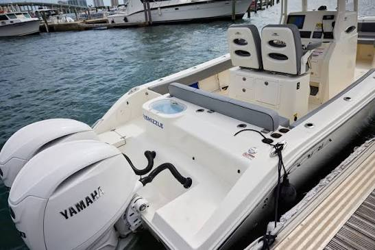
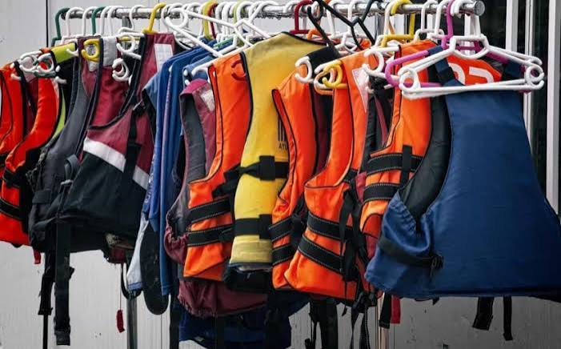
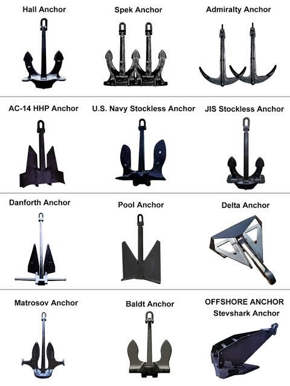
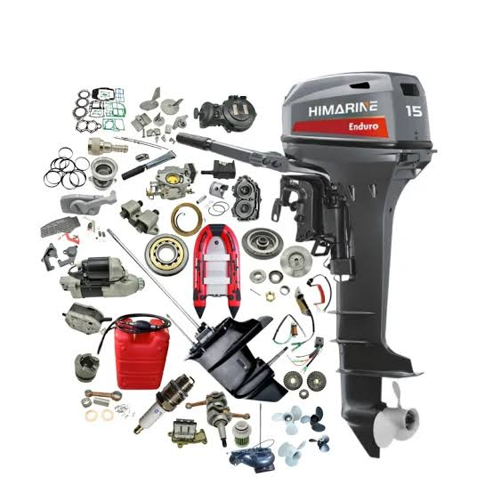
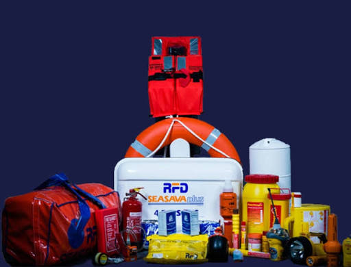
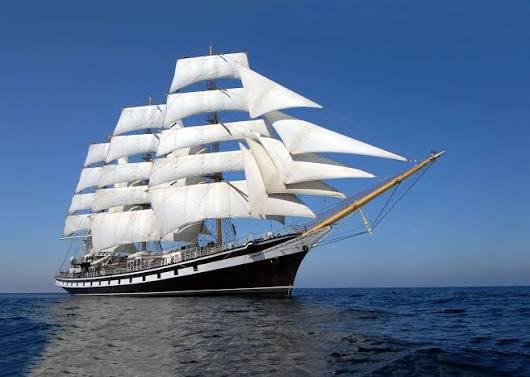
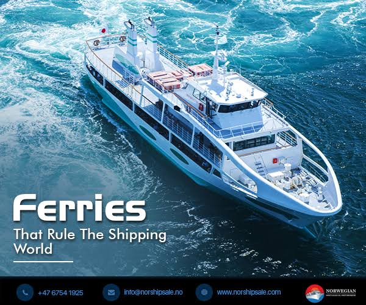

Kenya Marine Supplies Ltd offers a wide range of marine products and services to reach the customers needs.These include marine engines, boat spare parts,fishing nets,life jackets,anchors,ropes,marine electronics, and other essential marine equipment.



Our marine equipment includes anchors, ropes, life jackets, and other essential gear for safe and efficient marine operations.


We provide reliable marine transport services for individuals and businesses in the coastal regions of Kenya.

